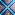

Análisis de Tensores de Orden 2 en Procesamiento de Imágenes
Extracción de la matriz de intensidades en escala de grises $I_{i,j}$ a partir de la imagen alojada en el repositorio.

Tensor de Entrada (5x5) * Filtro (3x3) = Mapa de Características (3x3)